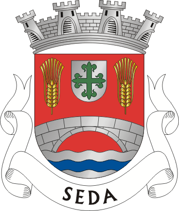
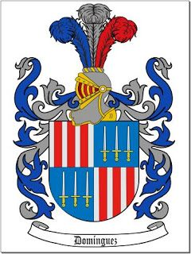

Rosa Maria Sedas Domínguez
Primera jarocha nacida en la Ciudad de México, en las calles de Rosas Moreno. Hija de Don Roberto Sedas Domínguez y de Consuelo Domínguez Nieva. La consentida de su generación, querida por todos, envidiada por algunos y reconocida como un pilar de la familia desde chica. Entre sus curiosidades de vida ella:
- Estudió en el Anglo Español
- Se formó en el Herlena Herlinhi Hall como Secretaria Bilingüe Contador Público
- Desde chica tuvo una mente muy brillante y sagaz, como buena jarocha
- Tiene un don para preparar comida deliciosa, que te lleva a experiencias de vida
- Se casó con Jorge "Tatas" Lopez Bustos
- Es la fan # 1 de sus hijos
- Es la consentidora # 1 de sus nietos
- Es una bendición en las vidas de nuestra familia
Familia Sedas Domínguez
 Sus hermanos fueron Roberto Gustavo "Tío Beto" y Julio Carlos "Tío Bigotes". Juntos hicieron del centro de la familia en la casa de Sonora, donde todos los parientes foráneos llegaban y visitaban.
Ella fue muy consentida por su papá, todos sus cumpleaños le llevaba una marimba chiapaneca y le tocaban las mañanitas y "Rosa" del compositor jarocho Agustín Lara, su canción.
Después del fallecimiento temprano de su padre, fue la consentida de sus hermanos, y primos, quienes siempre velaban por su bienestar. Podemos entender que nació con angel, en cuna plateada, no de plata.
Dos semanas antes de casarse entró a la cocina para aprender de su mamá, y ahí empezó la magia y desarrolló un talento reconocido por todos los que han probado algo de sus guisados, postres o simplemente sus frijoles.
Familia López Sedas
Se casó en 1974 con Jorge López Bustos y ahí inició una historia de casi 50 años juntos, más lo que se acumule en el camino.
Nueve meses después llegó "la sirenita", también consentida por todos, y unos años después llegó el más pequeño de la generación.
"Calita" era una forma como solían llamarla sus primos, aunque tambén se distinguen "dulce", "lucas", "ma" y más recientemente "abuela."
A abuela le encantan sus mascotas,entre sus preferidas: "Anatol", "Dinky-Alessandro-Zangano" y "Shutko" o mejor rebautisado como "Cuco."
Entre sus pasatiempos está el hornear "canillas", coicinar comida veracruzana, maquillarse como artista, escuchar música y dormir escuchando las novelas. Sus canciones favoritas son:
Calita es una mujer con mucha personalidad, que lugar donde entra llama la atención, por su belleza, clase y forma de ser. A veces también le gusta llamar la atención con otras payasadas, como subirse en coches ajenos, o inclusive remolcar taxis estacionados.
Su agilidad mental no la deja de lado nunca, por lo que siempre tiene un comentario para hacer, que normalmente es muy agudo, por ello el sobrenombre "Dulce".
Aunque parece ser una persona tan complicada, ella está rellena de puro amor, que a veces expresa ásperamente, pero no deja duda de que ama con todo su corazón.
¡Feliz cumpleaños abuela!
Podemos reconocer que "Calita" es una mujer muy especial, un pilar en nuestra familia y en nuestras vidas. No solo podemos ver su fuerte personalidad en su forma de ser, su agudeza intelectual en sus comentarios, su lealtad, amor, sacrificio y dedicación a su familia. Como toda leona no hay nada sobre su familia, y si hay alguna característica que se distingue es que tiene un gran corazón, al que es difícil de entrar para los de fuera, pero ya que lo permite se convierten en parte de su manada. Gracias por todo lo que brindas a nuestra vida.